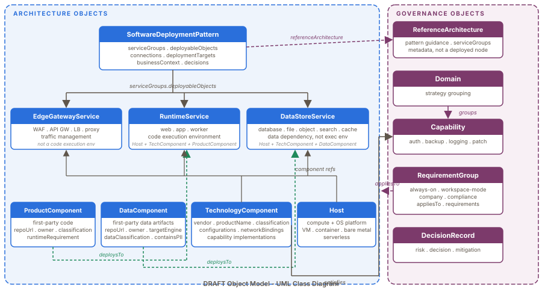

DRAFT User Manual
DRAFT is an AI-first, YAML-first framework for documenting governed architecture. It is designed to help teams describe architecture as structured objects that can be validated, reviewed, searched, and eventually used as automation input.
This manual explains how to use a DRAFT workspace day to day. It is written for engineers who author architecture, architects who review it, and AI assistants acting as the Draftsman.
Start Here
Use this path when you are new to a workspace:
- Read the workspace root
README.md. - Read the workspace root
AGENTS.mdif you are an AI assistant or are using one. - Confirm the repo has
.draft/framework/,.draft/workspace.yaml,
catalog/, and configurations/.
- Connect the AI tool you already use to the repo and ask it to act as the
Draftsman.
- Ask the Draftsman to
start setup mode. - Run validation before changing content.
- Use the catalog browser to find existing objects before creating new ones.
- Add or update content through the Draftsman, or under company-owned
catalog/ and configurations/ when working directly.
- Regenerate derived docs after source changes.
- Review the YAML diff and generated browser diff together.
In a company workspace, the normal commands are:
python .draft/framework/tools/validate.py --workspace .
python .draft/framework/tools/generate_browser.py --workspace . --output docs/index.htmlIn the upstream framework repository, the normal commands are:
python framework/tools/validate.py
python framework/tools/generate_browser.py
python framework/tools/generate_ai_index.pyThe browser generator writes docs/index.html and, by default, writes this manual to docs/user-manual.html.
Setup Mode
Setup mode is the Draftsman first-run path for making a company workspace useful without overwhelming architects, engineers, or product teams.
Start it by asking the AI assistant connected to the company repo:
start setup modeSetup mode keeps the conversation oriented around:
- current step
- next step
- remaining setup work
- revisit-later decisions
- one focused question, or at most three questions when choices are needed
The minimum useful setup is:
- private company repo selected and
.draft/framework/present - business taxonomy defined enough for navigation
- first company vocabulary lists declared in advisory mode, or queued for later
- initial active Requirement Groups selected
- capability owners identified for mapped capabilities
- acceptable-use Technology Components seeded for common standards
- baseline deployable standards started
- one real product, system, repository, diagram, or document selected for the
first Drafting Session
The Draftsman should record uncertainty as assumptions, unresolved questions, or Drafting Session next steps instead of forcing complete answers during setup.
The Mental Model
DRAFT separates four concerns:
| Concern | Where It Lives | Purpose |
|---|---|---|
| Framework rules | .draft/framework/ in company workspaces, framework/ upstream | Schemas, base capabilities, Requirement Groups, docs, and tools. |
| Company architecture | catalog/ | Hosts, services, Product Services, Software Deployment Patterns, and other architecture inventory. |
| Company extensions | configurations/ | Capability mappings, object patches, company Requirement Groups, and local domains. |
| Generated views | docs/ | Static HTML, browser assets, and browser data generated from YAML and Markdown source. |
DRAFT object model — architecture objects, governance objects, and their core relationships:

Framework files are not normal authoring targets inside a company workspace. Update them only through an explicit framework refresh or framework change. Architecture content belongs in the company workspace.
If an AI assistant is connected only to the upstream framework repo and the user asks to create company architecture content, the assistant should ask for the company-specific DRAFT workspace before writing content.
Object Types
DRAFT objects are YAML documents with generated opaque UIDs. Do not ask humans to create semantic IDs. Use human-readable name, aliases, and file paths for conversation, and use the repair tool when validation reports missing or malformed UIDs.
python .draft/framework/tools/repair_uids.py --workspace .Use the object model diagram above as the quickest reference for how the major object types relate to each other.
Architecture Objects
| Object Type | Use It For |
|---|---|
| Technology Component | A governed vendor product, operating system, compute platform, agent, appliance product, software package, or product/version building block. |
| Host | An operational platform that combines compute, operating system, and required host capabilities. |
| Runtime Service | Reusable runtime behavior such as web, app, cache, worker, messaging, or serverless runtime. |
| Data-at-Rest Service | Durable data behavior such as database, file, object, search, analytics, or storage. |
| Edge/Gateway Service | Boundary behavior such as WAF, firewall, API gateway, load balancer, ingress, proxy, or traffic inspection. |
| Product Service | First-party deployable runtime behavior that runs on a selected Host, Runtime Service, Data-at-Rest Service, Edge/Gateway Service, or equivalent deployable object. |
| Software Deployment Pattern | The intended assembly of deployable objects for a product or product capability. |
| Reference Architecture | A reusable deployment approach that Software Deployment Patterns may follow. |
Technology Components are governed building blocks. They are deployed as ingredients inside hosts and services, but they are not usually the service boundary you review on their own.
Governance Objects
| Object Type | Use It For |
|---|---|
| Capability | A reusable architecture need such as authentication, backup strategy, log management, operating system, or patch management. |
| Requirement Group | A requirement set that asks questions, defines acceptable evidence, and validates object completeness. |
| Domain | A strategy grouping for related capabilities. |
| Decision Record | A record of a known risk, accepted decision, mitigation, or follow-up. |
| Drafting Session | A machine-readable work-in-progress record for partial authoring sessions. |
| Object Patch | A workspace overlay that deep-merges selected company fields into a framework-owned object. |
Repository Ownership
Use this decision table before editing:
| Need | Edit |
|---|---|
| Add or update company architecture inventory | catalog/ |
| Map a framework capability to company-approved Technology Components | configurations/object-patches/ or company-owned configurations/capabilities/ |
| Add a company Requirement Group | configurations/requirement-groups/ |
| Adjust selected fields on a framework object without copying it | configurations/object-patches/ |
| Change schema, validation, tools, or framework documentation | upstream framework repo |
| Change the static browser output | source YAML, Markdown, or generator code, then regenerate |
| Change company browser colors or branding | company-owned configurations/browser/theme.css |
Do not hand-edit docs/index.html, docs/assets/, or docs/user-manual.html. They are generated outputs. Regenerate and commit them with the source changes when the repo expects generated docs to be committed.
Requirements And Capabilities
Capabilities describe what an architecture must be able to do. Requirement Groups describe which questions must be answered and which mechanisms can satisfy them.
Requirement Groups can be:
- always-on for matching object types
- workspace-mode groups activated in
.draft/workspace.yaml - company or compliance groups declared by specific objects in
requirementGroups
An object that declares a Requirement Group must provide valid requirementImplementations for the applicable requirements before it can be treated as approved for that group.
Requirements can be satisfied by mechanisms such as:
- a Technology Component
- a named Technology Component configuration
- an internal component
- an external interaction
- a deployment configuration
- a field value
- an architectural decision
When validation says a requirement is missing, either add the evidence that directly satisfies it or record an explicit disposition such as not-applicable or not-compliant when the schema and Requirement Group allow it.
Authoring Workflow
Follow this loop for most changes:
- Search the browser and YAML for an existing object.
- Choose the correct object type before writing fields.
- Start from the closest template or nearby approved object.
- Fill in required schema fields.
- Add relationships to existing objects by UID.
- Add Requirement Group evidence or architectural decisions.
- Run validation.
- Regenerate the browser and manual.
- Review source and generated diffs.
Use rg or the browser search before adding new objects. Duplicate objects make impact analysis and requirement validation harder.
Modeling Technology Components
Create a Technology Component when you need to govern a specific product, product family, product version, operating system, compute platform, agent, appliance, or software package.
A Technology Component should usually include:
vendorproductNameproductVersionclassification- lifecycle facts about the vendor product
- capabilities the component can satisfy
- named
configurationswhen different approved variants matter
Use top-level capabilities when the product generally satisfies a capability. Use configuration-level capabilities when only a named variant satisfies the capability.
Network Bindings
Technology Component configurations can include networkBindings for known ports, protocols, and traffic direction. Use this for component-level facts such as a database engine listening on TCP 1433 or a message broker listening on AMQP 5672.
configurations:
- id: default-listener
name: Default listener
networkBindings:
- port: 1433
protocol: TCP
direction: inbound
description: Default SQL Server listener.When a host or service consumes a specific configuration, reference it from the internal component entry:
internalComponents:
- ref: 01ABCDEFGH-1234
role: database engine
configuration: default-listenerModeling Hosts And Services
Hosts describe operational platforms. A useful Host normally references operating system and compute Technology Components, then documents required host capabilities such as monitoring, logging, patching, identity integration, backup, and security tooling.
Runtime Service, Data-at-Rest Service, and Edge/Gateway Service objects describe reusable behavior delivered through a delivery model:
self-managedpaassaasappliance
For Runtime, Data-at-Rest, and Edge/Gateway Services, the primary Technology Component is the main functional component. Do not add a separate dependency rationale for the primary component when it is the object core.
Data-at-Rest Services should document backup strategy, backup platform, RTO, and RPO. Use an external interaction for a separate backup platform, or use architecturalDecisions.backup.platform when the backup capability is provider-managed inside the service.
Modeling Product Services
A Product Service represents first-party runtime behavior. It is the place to document company-authored application code or black-box first-party components.
At minimum, a Product Service needs:
schemaVersionuidtype: product_servicenameproductrunsOncatalogStatuslifecycleStatus
Use Product Service fields to document:
- internal processes such as API, worker, scheduler, conductor, or queue processor
- API or protocol endpoints exposed by those processes
- internal components consumed by the product
- external interactions the product depends on
- deployment configurations such as single-tenant, multi-tenant, embedded, or standalone variants
- architectural decisions that explain requirements or non-obvious dependencies
Do not elevate static assets, database schemas, build scripts, or simple product configuration to Product Service just because they are deployable by CI/CD. The boundary is first-party runtime behavior that a Software Deployment Pattern needs to communicate.
Modeling Software Deployment Patterns
A Software Deployment Pattern is the product-level assembly. It answers what a product deploys and how those objects relate.
A good Software Deployment Pattern includes:
- product or capability name
- service groups
- deployment targets
- deployable object references
diagramTiervalues for presentation, application, data, or utility placement- source repository provenance when the pattern is generated from repository discovery
- decisions or assumptions that explain uncertain boundaries
Do not stop when the Software Deployment Pattern validates. Walk the full object graph and make sure every referenced Host, Service, Product Service, Technology Component, and dependency is valid enough for review.
Dependency Rationale Rule
Every internalComponents entry and externalInteractions entry must either directly satisfy an applicable requirement or have an architectural decision explaining why it is modeled.
Use these machine-readable buckets:
architecturalDecisions.externalInteractionRationalesarchitecturalDecisions.internalComponentRationalesarchitecturalDecisions.dependencyRationales
Use stable keys such as the interaction name, component ref, enabledBy, role, or capability ID.
Example:
architecturalDecisions:
externalInteractionRationales:
Dynatrace Platform: Dynatrace is modeled because the local agent sends telemetry to the platform; it does not satisfy the host health monitoring requirement by itself.If the dependency is intended to satisfy a requirement, add the matching capability or requirementImplementations evidence instead of adding rationale.
Agent Technology Components have an additional rule: any deployable object that includes an agent must document the corresponding external interaction for the agent's platform or record an exception under architecturalDecisions.agentInteractionExceptions.
Validation
Run validation before treating a change as ready:
python .draft/framework/tools/validate.py --workspace .Common failure categories:
| Failure | Usual Fix |
|---|---|
| Missing required field | Add the field required by the object schema. |
| Unknown reference | Use an existing UID or add the referenced object. |
| Invalid lifecycle or status | Use the enum values from the schema. |
| Missing requirement evidence | Add valid requirementImplementations or a supported disposition. |
| Unexplained dependency | Add requirement evidence or a dependency rationale. |
| Agent without platform interaction | Add the external interaction or an agent interaction exception. |
| UID issue | Run repair_uids.py and review the diff. |
Warnings are still useful. A warning usually means the object can be parsed but is incomplete, ambiguous, or not ready for review.
Browser And Generated Docs
The static browser is generated from YAML source and framework metadata.
In a company workspace:
python .draft/framework/tools/generate_browser.py --workspace . --output docs/index.htmlIn the framework repo:
python framework/tools/generate_browser.pyBy default, the browser generator also renders the framework-owned docs/user-manual.md source to docs/user-manual.html beside the browser output. Use --skip-user-manual only when you intentionally want to regenerate the browser without touching the manual.
The browser shell, CSS, JavaScript, and default theme live in the framework under browser/. Generated catalog data is written separately to docs/assets/browser-data.js, which keeps content diffs separate from display framework changes.
Company workspaces can add configurations/browser/theme.css to override stable CSS variables without editing .draft/framework/**. The generator copies that file to docs/assets/workspace-theme.css after the default browser stylesheet, so company theme values win through normal CSS cascade.
Example:
:root {
--accent: #005eb8;
--accent-strong: #003b71;
--accent-soft: rgba(0, 94, 184, 0.12);
--blue: #0072ce;
}Map Presets
The Deployment Targets view renders an interactive world map. A workspace can configure which map view opens by default and users can switch between presets with the toggle buttons in the view header.
Available presets:
| Preset ID | Label | When to use |
|---|---|---|
world | 🌍 World | Organizations with global or multi-continent deployments (default) |
north-america | 🌎 N. America | Organizations whose infrastructure is entirely in North America |
Both presets use the same topojson data and projection — the North America preset zooms the map to the region bounded roughly by 50 °W–170 °W / 10 °N–75 °N so that US, Canadian, and Caribbean clusters are easier to read.
To set the default for a workspace, add a browser section to workspace.yaml:
browser:
defaultMapView: north-america # or 'world' (the default when this key is absent)The generator validates the value and falls back to world for unrecognized preset IDs. Users can always switch presets at any time using the toggle; the choice resets to the workspace default the next time the view is entered.
GitHub Actions workflows typically regenerate derived docs on pushes that change YAML, framework docs, templates, the browser generator, AI bootstrap files, or README content. Check the local .github/workflows/ files for the exact path filters in a given repo.
AI Assistant Usage
DRAFT is AI-first, but AI behavior depends on the tool being used. An AI assistant can act as the Draftsman only when it has repository access, can read the bootstrap files, and has permission to write changes.
The bootstrap chain is:
- root
AGENTS.md - framework
AGENTS.md framework/docs/draftsman.mdAI_INDEX.md- schemas, templates, capabilities, Requirement Groups, and nearby catalog examples
AI assistants should:
- read the bootstrap before authoring
- ask for a company workspace before creating company content when connected only to the upstream framework repo
- avoid editing vendored
.draft/framework/**files during normal company authoring - use generated UIDs instead of inventing semantic IDs
- prefer existing approved capability mappings before proposing new components
- run validation and regenerate docs when changing source content
Review Checklist
Before merging a DRAFT change, check:
- the object type is correct
- no duplicate object already exists
- required schema fields are present
- references point to real objects
- Technology Components are specific enough to govern
- Product Services represent first-party runtime behavior
- Requirement Groups and implementations are coherent
- internal components and external interactions either satisfy requirements or have rationale
- generated docs were regenerated from source
- framework files were changed only when the change is intentionally a framework change
Troubleshooting
If the browser does not show a new object, verify the file is under a discovered folder such as catalog/hosts/, catalog/runtime-services/, or configurations/capabilities/, and confirm the YAML has a valid uid.
If validation cannot find framework objects in a company workspace, confirm the vendored framework exists at .draft/framework/ and run validation with --workspace ..
If an AI assistant starts editing framework files in a company repo, stop and redirect it to the company-owned catalog/ or configurations/ paths unless the task is explicitly a framework refresh.
If a generated file looks stale, rerun the generator locally and check whether the repo's workflow also stages that generated file.